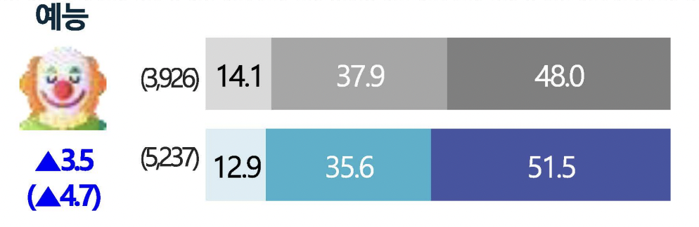
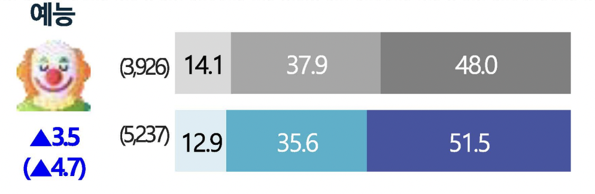

"코로나19 발생 이전 대비 소비량 변화"



| 접촉 경로 | 2018년 | 2019년 | 2020년 | 2021년 |
|---|---|---|---|---|
| 온라인/모바일 플랫폼 | 69.8 | 67.5 | 72.5 | 75.0 |
| TV | 57.5 | 62.3 | 66.7 | 64.6 |
| CD/비디오 | 14.3 | 14.1 | 18.9 | 19.3 |
| 온라인/모바일 플렛폼 | 2018년 | 2019년 | 2020년 | 2021년 |
|---|---|---|---|---|
| 유튜브 | 83.8 | 83.1 | 78.1 | 74.7 |
| 넷플릭스 | 44.0 | 40.8 | 56.8 | 64.0 |
| 아마존 프라임 | 17.9 | ------ | 25.8 | 30.5 |
| 유튜브 프리미엄 | ------ | ------ | 24.5 | 27.7 |
| 아이치이 | 19.4 | ------ | 18.9 | 24.6 |